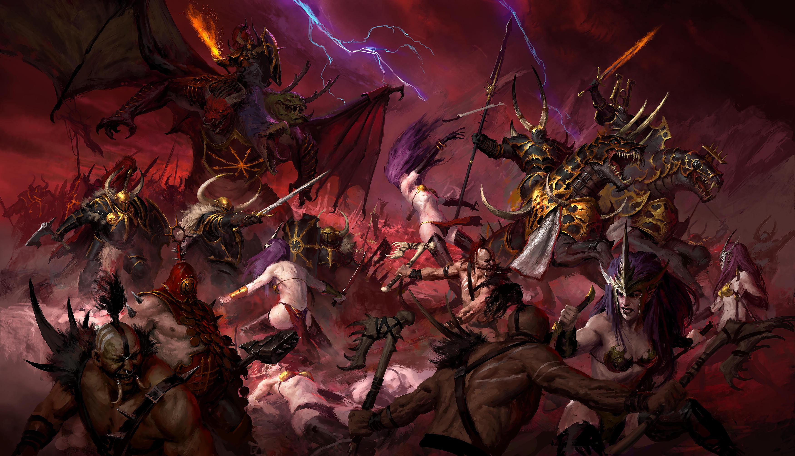
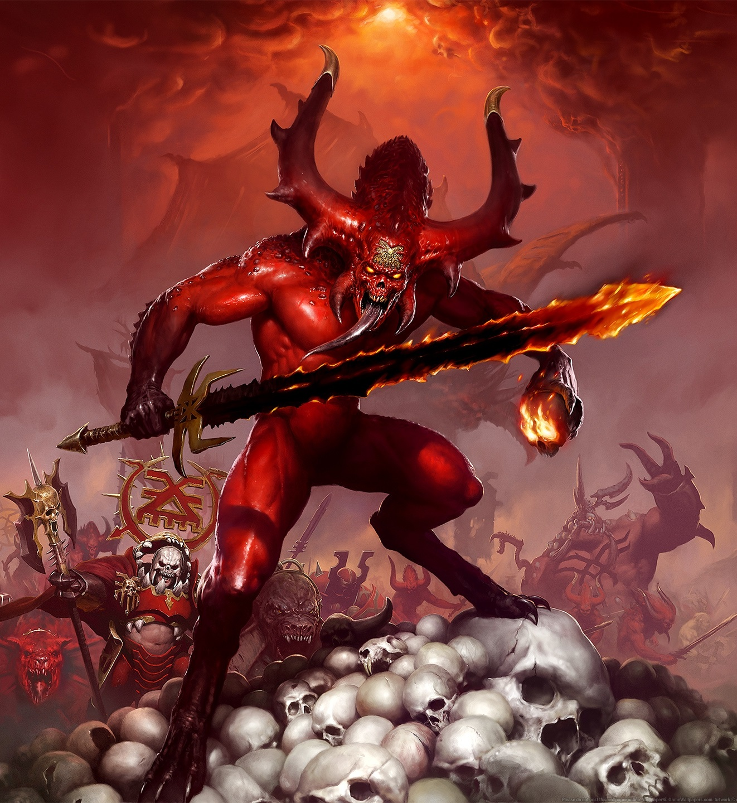
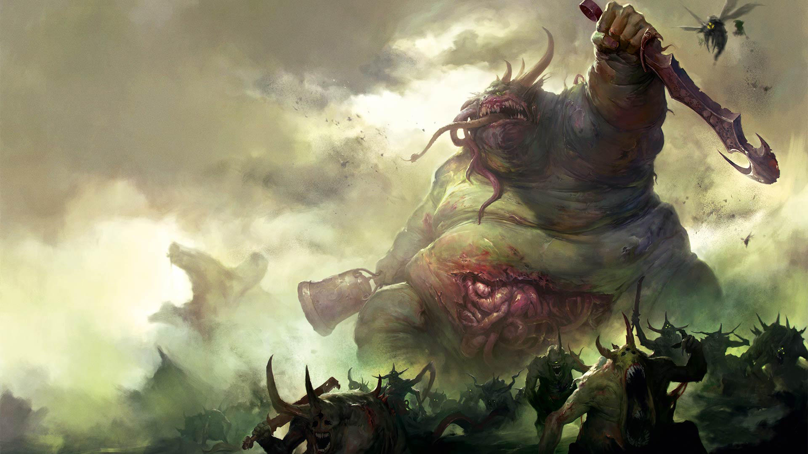
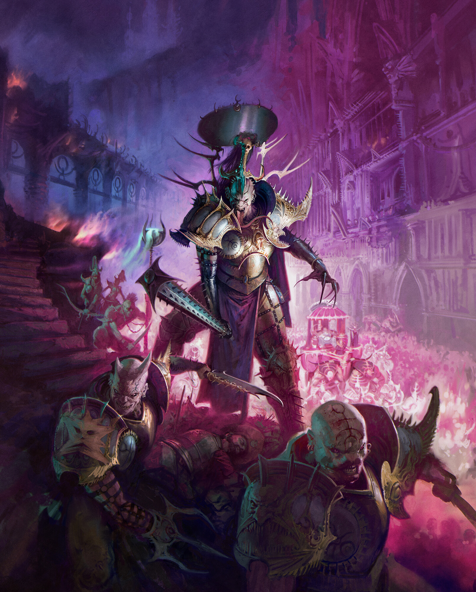
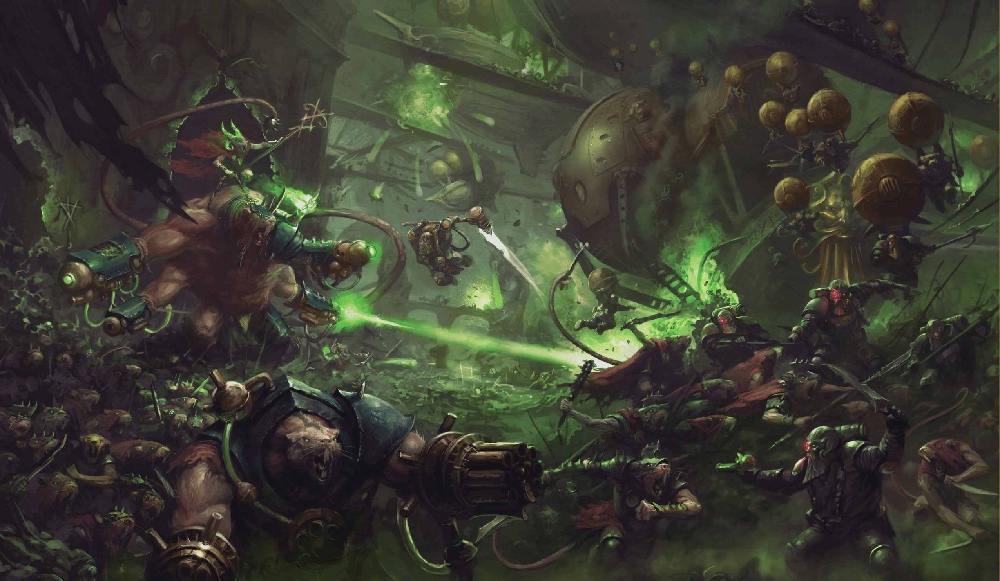

when the Dark Gods set aside their ancient hatreds and take a pause from the Great Game. On these rare occasions, they unleash the full might of their daemonic hordes upon reality. The ground twists and the skies burn before the advance of the Legion of Chaos Ascendant, a force of utter desolation united under the eightfold mark of ruin. This daemonic legion is anchored to the material realms by the combined will of the Ruinous Powers and in battle, they call upon infinite reinforcements from the Realm of Chaos. An endless number of hosts form this Legion, each aligned to one of the four Ruinous Powers. The main units are a combonation of all the other choas gods. the units are Centaurion Marshal, Corvus Cabal, Cypher Lords, Chaos Legionnaires, Chaos Spawn, Fomoroid Crusher, Horns of Hashut, Iron Golem, Mindstealer Sphiranx, Ogroid Myrmidon, Ogroid Theridons, Scions of the Flame, Spire Tyrants, Splintered Fang, Tarantulos Brood, Raptoryx, Untamed Beasts, Unmade, Daemon Prince, Fury, Gaunt Summoner of Tzeentch and Chaos Familiars, Mutalith Vortex Beast, Slaughterbrute, Soul Grinder, Darkoath Chieftain, Darkoath Fellrider, Darkoath Marauder, Darkoath Savagers, Darkoath Warqueen, Darkoath Wilderfiend, Chaos Chariot, Chaos Chosen, Chaos Gorebeast Chariot, Chaos Knight, Chaos Lord, Chaos Sorcerer Lord, Chaos Warrior, Chaos Warshrine, Exalted Hero of Chaos.

The Disciples of Tzeentch lurk in the shadows, manipulating the strands of fate to serve their whim. They are bringers of madness and pandemonium, and when they rise up in force, their foes are soon overcome by their masterful ploys and storms of blazing spellcraft. They are schemers, warlords and revolutionaries, who in their quest for power, have become both the puppets and puppeteers of fate. They triumph over their enemies through arcane firestorms, cunning and sheer unpredictability and their labyrinthine machinations have brought misery and ruin to thousands over the centuries. Tzeentch is known as the Architect of Fate. A mad god of hope and change, he delights in catching mortals in webs of his impossibly convoluted plots, twisting their ideals and ambitions until they serve his ends. Main units are Blue Horrors of Tzeentch, Brimstone Horrors of Tzeentch, Burning Chariot of Tzeentch, Flamer of Tzeentch, Herald of Tzeentch, Lord of Change, Mutalith Vortex Beast of Tzeentch, Pink Horror of Tzeentch, Screamer of Tzeentch,Curseling the Eye of Tzeentch, Fatemaster Tzeentch Chaos Lord on Disc of Tzeentch, Gaunt Summoner of Tzeentch, Jade Obelisk, Kairic Acolyte, Magister Tzeentch Sorcerer Lord, Ogroid Thaumaturge, Tzaangor.

The Blades of Khorne revel in the carnage of the battlefield. The devoted warriors of the most bloodthirsty of the Chaos Gods, they plunge headlong into the most savage and hate-fuelled fighting imaginable, earning their lord's wrathful favour with each skull they claim. The Ruinous Power known as Khorne is the god of rage and bloodshed, the manifestation of mankind's most hateful emotions Main units are Bloodthrone, Bloodcrusher, Bloodletter, Bloodmaster, Bloodthirster of Insensate Rage, Bloodthirster of Unfettered Fury, Flesh Hound, Skull Cannon, Skullmaster, Slaughterbrute of Khorne, Wrath of Khorne Bloodthirster, Aspiring Deathbringer, Blood Warrior, Bloodreaver, Bloodsecrator, Bloodstoker, Claws of Karanak, Exalted Deathbringer, Khorgorath, Lord of Khorne on Juggernaut, Mighty Skullcrusher, Realmgore Ritualist, Skullgrinder, Skullreaper, Slaughterpriest, Wrathmonger.

The Maggotkin of Nurgle are entropy and sickness given form. Charged by their disgusting deity with spreading disease across the Mortal Realms, they do not let anything stop them from accomplishing their sacred task, shrugging off the mightiest of blows and most potent of spells with wet, gurgling laughs. It can be difficult, at first, to understand why anyone would willingly turn to the worship of Nurgle. The gifs offered by this foul god take the form of putrid poxes and bloating blights, and he is empowered through the despair of those wracked by sickness and despair. Main units are Beast of Nurgle, Great Unclean One, Nurgling, Plague Drone of Nurgle, Plaguebearer of Nurgle, Poxbringer Herald of Nurgle, Spoilpox Scrivener, Sloppity Bilepiper, Harbinger of Decay, Lord of Afflictions, Lord of Blights, Lord of Plagues, Pusgoyle Blightlord, Putrid Blightking, Rotbringer Sorcerer, Rotmire Creed

the Hedonites of Slaanesh come to bring ecstatic carnage to the realms. Though they may appear graceful, even urbane, such is a sinister mirage - for the Hedonites are monstrously cruel, and their wars are waged as much to spread suffering as to achieve any strategic goal. The Hedonites are the favoured servants and sycophants of the Dark Prince, connoisseurs of excess and ringmasters to carnivals of sin. Main units are Bladebringer, Contorted Epitome, Daemonette of Slaanesh, Exalted Seeker Chariot of Slaanesh, Fiend of Slaanesh, Hellflayer of Slaanesh, Infernal Enrapturess, Keeper of Secrets, Seeker Chariot of Slaanesh, Seeker of Slaanesh, Viceleader, Blissbarb Archer, Blissbarb Seeker, Hellstrider of Slaanesh, Lord of Hubris, Lord of Pain, Myrmidesh Painbringer, Shardspeaker of Slaanesh, Slaangor Fiendblood, Slickblade Seeker, Symbaresh Twinsoul.
